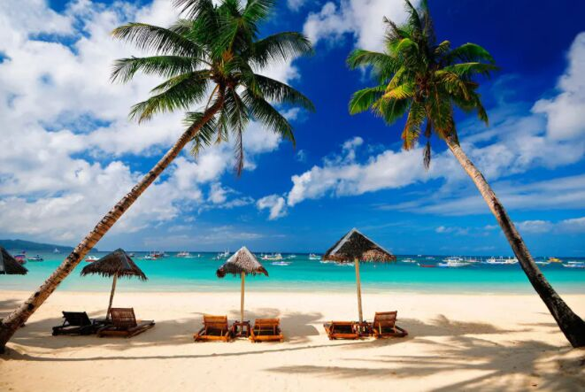

|  |
Choose the best places for your next tripBrowse our platform of over 100 places and find the best event space for your needs. View All Places |

|
Chocolate Hills (Bohol)The island province of Bohol in the Philippines may be smaller than its Visayan neighbors Cebu and Negros which are home to some of the top tourist spots in Visayas and most beautiful islands in the Philippines, but it doesn't fall short of stunning sights and activities, such as its famous Chocolate Hills. /p> View All Places |

|
The Ruins (Negros Occidental)The Ruins Mansion is the remains of an ancestral home built in 1920 by a wealthy sugar baron named Don Mariano Ledesma Lacson. Don Mariano constructed the mansion as a testament of his love for his Portuguese wife, Cora Maria Osorio Rosa-Braga, after she passed away in 1911. Maria, who was pregnant with their eleventh child at the time, lost her and their baby’s lives after figuring in an accident. View All Places |

|
Biri Island (Samar)Like a lost planet right here on the earth, Biri Island’s amazing natural rock formations will astound you. The island’s dramatic landscape carved by the fury of Mother Nature are as beautiful as they are surreal. These gigantic limestone rock formations were formed by pounding winds, raging storms and ruthless waves that battered the coast. If there’s one iconic place you need to visit in Northern Samar, Biri Island would be your best bet. View All Places |

|
Islas de Gigantes (Iloilo)In Iloilo's Islas de Gigantes, you'll visit secluded white-sand beaches, stunning rock formations, and long stretches of sandbars. Also known as Gigantes Islands, its name came from the local tales that bones of giant humans were found in one of the caves here, this Iloilo island hopping destination is also known for fresh but budget-friendly seafood. View All Places |